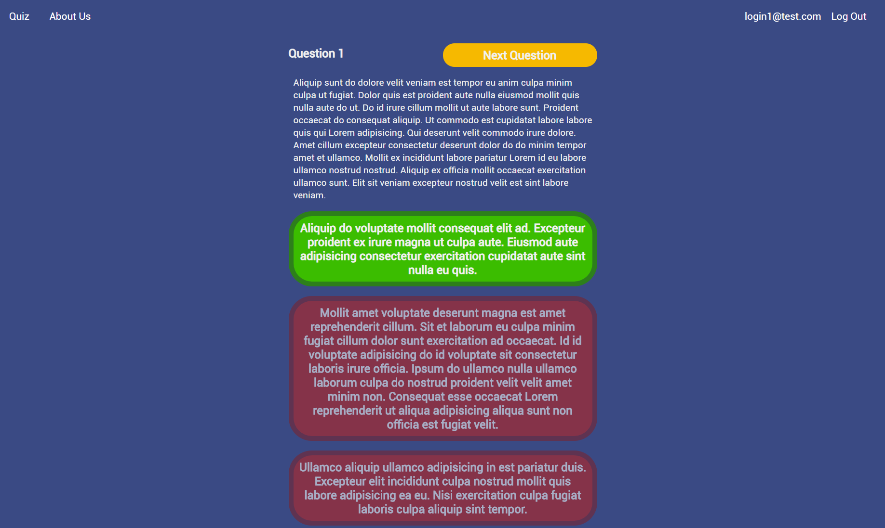
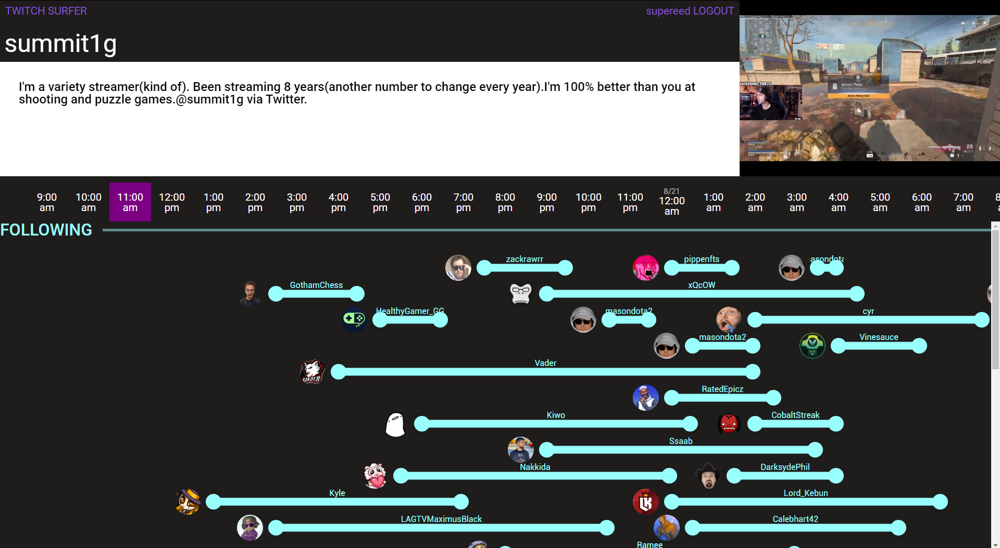

Stitch
Easily create and render videos using content from Twitch.TV. Uses AWS (ECS, ECR) to start up docker images that render jobs cheaply and quickly to scale. Flask backend / React frontend.

Board Explorer
A neural network (YOLOv5 in Pytorch) chrome extension that replaces static chessboards on your screen with playable boards that have engine support.



DaMa
Generate training data easily using Pillow and json configuration. Used to generate the 8000+ image dataset used to train Board Explorer!
